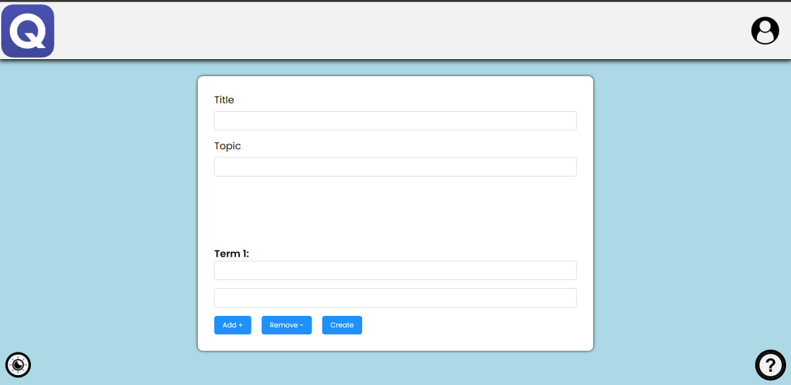

Welcome to Quizzy! Quizzy is a website where you can create and study study sets. A study set is a collection of cards. Each card has a question and an answer. To study a study set, you can study the cards in the study set. To study a card, you will be shown the question. You can then click on the answer button to see the answer. You can also click on the next button to go to the next card. You can also click on the previous button to go to the previous card. You can also click on the flip button to flip the card. You can also click on the shuffle button to shuffle the cards. You can also click on the repeat button to repeat the current card. You can also click on the repeat all button to repeat all of the cards. You can also click on the stop button to stop repeating the cards. You can also click on the settings button to change the settings. You can also click on the help button to view help information. You can also click on the profile button to view your profile. You can also click on the logout button to logout.

The home page is where you can find all of the study sets that you have created. You can also search for study sets that other users have created. To search for a study set, click on the search bar and type in the name of the study set you are looking for. You can also filter your search by topic. To do this, click on the topic dropdown menu and select the topic you are looking for. Once you have found the study set you are looking for, click on it to view it.
To create a study set, click on the create button on the navigation bar. You will be taken to a page where you can create your study set. To create a study set, you must first give it a name. Then, you can add as many cards as you want. To add a card, click on the add card button. You will be taken to a page where you can add a question and answer to your card. Once you have added all of the cards you want, click on the create button to create your study set.

To view a study set, click on the study set you want to view. You will be taken to a page where you can view the study set. To view the cards in the study set, click on the view cards button. You will be taken to a page where you can view the cards in the study set. To study the cards in the study set, click on the study button. You will be taken to a page where you can study the cards in the study set. To edit the study set, click on the edit button. You will be taken to a page where you can edit the study set. To delete the study set, click on the delete button. You will be taken to a page where you can delete the study set.
To edit a study set, click on the edit button on the view page. You will be taken to a page where you can edit the study set. To edit the study set, you can change the name of the study set. You can also add, edit, or delete cards. To add a card, click on the add card button. You will be taken to a page where you can add a question and answer to your card. To edit a card, click on the edit button next to the card you want to edit. You will be taken to a page where you can edit the question and answer of the card. To delete a card, click on the delete button next to the card you want to delete. Once you have finished editing the study set, click on the save button to save your changes.

The leaderboard is where you can view the users with the most points. To view the leaderboard, click on the leaderboard button on the navigation bar. You will be taken to a page where you can view the leaderboard. To view the profile of a user, click on the user you want to view.